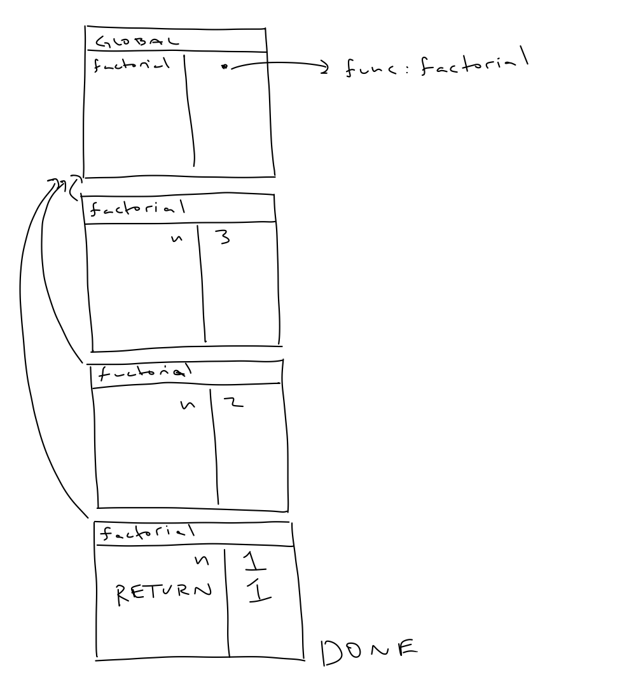
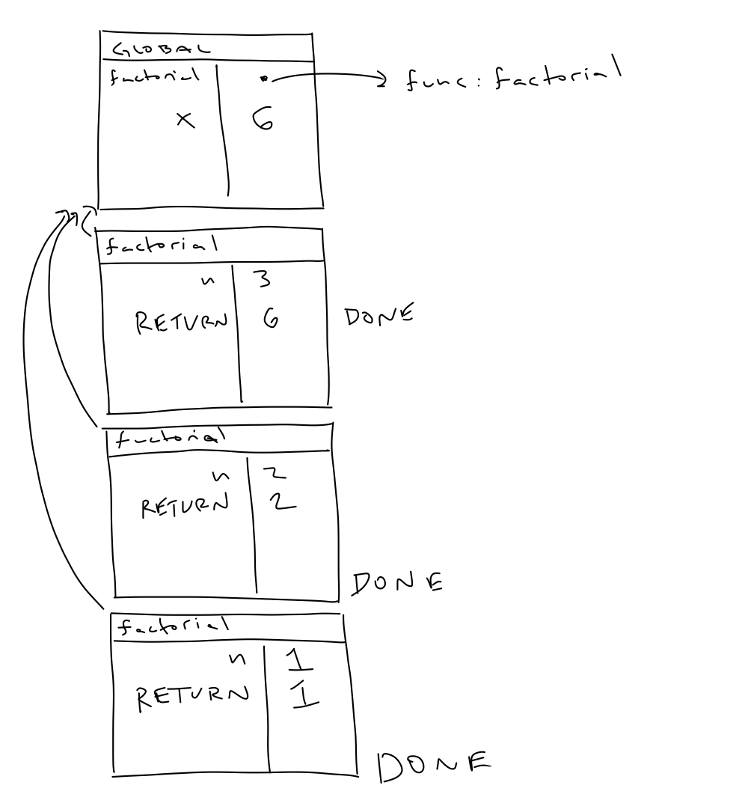

The discussion of recursion begins with the basic observation that a function can call itself. From the perspective of syntax, this should seem reasonable. A function call is an expression which can appear as statements anywhere in a program. From the perspective of semantics, this also seems to work out, albeit with a bit more thought. When a function is called it must have already been declared, so its name appears in the environment and can be found using the lookup procedure.
This is a powerful observation, but has its pitfalls. We can use this idea to produce concise and frankly elegant functions, but it also an easy way for us to introduce infinite loops in our code. The smallest such example:
func dumb() {
dumb()
}Like with induction, we want our recursive functions to be well-founded which means they don't cause infinite loops, they always eventually lead to a call that will terminate, like a base case.
Let's start with a very simple example. We have already seen the factorial function which, at this point of the course, we might write as
func factorial(_ n: Int) -> Int {
assert(n >= 1)
var accum = 1
for i in 1...n {
accum *= i
}
return accum
}This code expresses the idea that \(n!\) is the product of the first \(n\) natural numbers. But another way of expressing the definition of factorial is that
We can use recursion to expression this definition in code.
func factorial(_ n: Int) -> Int {
if n == 1 { return 1 }
return n * factorial(n - 1)
}
var x = factorial(3)In order to better understand what is going on here it is worth drawing the environment diagram for a call to factorial(3). Each call to factorial(_:) on a number greater than 1 creates a new frame for a call to factorial. The first frame that is considered DONE is the one for the call on 1. Before, this all frames are considered live.

After this, all the frames are labeled DONE in reverse order in which they were called.

Let's consider a slightly more interesting example. Suppose we want to find the smallest element in an Array of Ints. One way we can do this is by iterating over the elements and keeping track of the smallest element. Alternatively, we know that the smallest element in an Array is going to be the minimum of the first element and the smallest element in the rest of the array.
func minInt(_ l: [Int]) -> Int? {
if l.isEmpty { return nil }
if let minOfRest = minInt([Int](l[1...])) { // this is a one-sided range, very useful
return min(l[0], minOfRest)
}
return l[0]
}There is a fair amount going on here, but the idea is simple: minOfRest is the value of the smallest Int in the l not including l[0]. It might be nil if this array is empty. But if it is not, then the minimum of the entire list has to be either minOfRest or l[0], the smaller of the two.
One more example, we can now do our operations on Int digits more cleanly.
func sumOfDigits(_ x: Int) -> Int {
assert(x >= 0)
if x < 10 { return x }
return (x % 10) + sumOfDigits(x / 10)
}The mindset behind recursion can be a bit challenging. We have to be comfortable using a function in our code that hasn't fully been written yet, and won't be fully written until we have used the function. It can feel very Catch-22, but it is actually quite similar to the technique of wishful thinking from functional abstraction. For recursion, it is often called the leap of faith. We have to be confident that when we recursively call a function that we have written the function correctly and that it will give us the solution that we expect. We use it as an abstraction.
The general structure of a recursive function is similar to that of an induction proof. There is a recursive call which, similar to the inductive step, makes use of the output of the function on a smaller object, and there is a base case (e.g. the n==1 case in factorial(_:)) which ensures that the recursive calls eventually lead to a terminating case. The notion of smallness depends on the type we are working with. The "smaller than" relation for Ints is obvious. For arrays and other collection types, it is based on the .count property.
So far we have only seen linear recursion, in which the recursive steps is a single call to a function on a smaller input. To get a better sense of what is happening with recursion we are going to generalize it in the case of Ints. Pretty much every form of linear recursion with nonnegative Ints has a particular structure that can be abstracted using higher-order functions. The idea is very much in line the accumulate function from Assignment 5.
func generalRecursionNat<T>(_ n: Int, base: T, step: (Int, T) -> T) -> T {
assert(n >= 0)
if n == 0 { return base }
return step(n, generalRecursionNat(n - 1, base: base, step: step))
}
let factorial = { generalRecursionNat($0, base: 1, step: *) }We start with a value base and then apply a given function which may depend on the current value of n a fixed number of times. That is all that recursion is, in some sense, a generalized version of function exponentiation.
Tree recursion is the natural analogy to strong induction to recursion. It is the observation that we can call the same function multiple times different sizes of inputs. The prototypical example of tree recursion is the recursive definition of fibonacci(_:)
func fibonacci(_ n: Int) -> Int {
assert(n >= 0)
if n == 0 || n == 1 { return 1 }
return fibonacci(n - 1) + fibonacci(n - 2)
}This version of fibonacci(_:) just exactly expresses the definition of the Fibonacci numbers that is typically given.
As with most (but not all) names in computer science, the name tree recursive is meant to be suggestive. We can represent a tree recursive function as a tree (in fact, we can represent a linear recursive function as a line, or a very simple kind of tree). A tree structure is a collection of nodes labeled with some information with arrows pointing to other nodes. What makes a tree a tree is that there are no loops in the collections of arrows. In this case the nodes are labeled by function calls and the arrows point to For example, we can visualize the fibonacci(5) as
Note that the circled parts of the tree are the same. This means there is duplicated work, which is not good for efficiently. We'll see in the next set of notes some ways to fix this.
The last kind of recursion I will mention is strange and a bit specialized, but very cool so worth mentioning. Mutual recursion comes from the idea that we can define functions which call each other. The classic example is the isEven(_:) and isOdd(_:) functions.
func isEven(_ n: Int) -> Bool {
if n < 0 {
return isOdd(n + 1)
else if n > 0 {
return isOdd(n - 1)
else {
return true
}
}
func isOdd(_ n: Int) -> Bool {
if n < 0 {
return isEven(n + 1)
else if n > 0 {
return isOdd(n - 1)
else {
return false
}
}This requires a great leap of faith. In some sense, neither function seems to have self-contained logic. But put together and read abstractly, they are quite clear. This is also one case in which it is very important the we are allowed to call functions before their declarations.